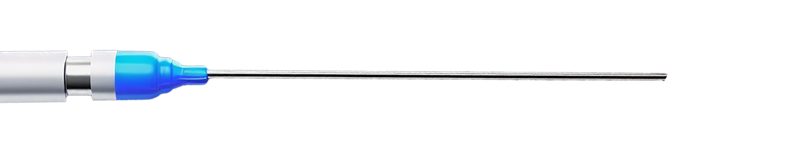

Designing Single-Use Probes
by: Global Interconnect Team, August 14, 2023
For years, reusable radiofrequency ablation probes were the design of choice for pain-management procedures. However, in a post-COVID world, original equipment manufacturers (OEMs) have sharpened their focus on patient safety and risk reduction—prompting the need for single-use alternatives to curtail cross-contamination and enhance patient well-being. This shift mirrors the broader industry trend in both Energy-Based and Diagnostic Medical Devices, where single-use solutions are gaining traction to ensure sterility and improve procedural outcomes.
This trend, akin to the transition seen with endoscopes, is now evident in radiofrequency ablation (RFA) probes.
Yet, transforming a reusable product into a single-use solution poses significant design challenges, necessitating innovative solutions across material selection, manufacturing processes, and supply chain strategies.
Single-use pain management probes are designed as thin, flexible, and elongated devices. They are often made of biocompatible materials such as medical-grade plastics and metals, ensuring they are safe for use in the human body. The probes usually exhibit a needle-like form with a crafted tip, adhering to identical standards as their reusable counterparts. Nevertheless, the materials and manufacturing processes will be fine-tuned for cost efficiency, considering their single-use nature.
The following design elements of single-use pain management probes will prepare you for your development project and help you achieve a product that will lead to better business and patient outcomes.

Electrode Configuration:
In single-use applications, monopolar electrode configurations are more popular. In a monopolar RFA application, the probe consists of a single active electrode and a larger grounding electrode, which is usually placed on the patient’s skin away from the treatment area. The electrical current passes from the active electrode, through the nerve tissue, and then to the grounding electrode, creating heat in the process.
Takeaway: In single-use applications, the dominance of monopolar electrode configurations highlights their effectiveness, as a single active electrode efficiently delivers controlled radiofrequency energy through nerve tissue, demonstrating the elegant synergy between precision and safety.
Electrode Material:
Single-use pain management probes can utilize varied materials for their electrodes. Nitinol and stainless steel are two commonly used materials, each with distinct properties:
- Nitinol: Nitinol is a nickel-titanium alloy that exhibits shape memory and superelasticity. Nitinol electrodes can be bent and twisted during insertion without permanent damage, and they will return to their original shape when deployed. This property allows for easier navigation through anatomical structures and reduces the risk of tissue trauma during probe placement. Nitinol electrodes also offer excellent conductivity and have a low magnetic susceptibility, which is beneficial in certain medical imaging scenarios.
- Stainless Steel: Stainless steel electrodes are made from a corrosion-resistant alloy of iron, chromium, and nickel. They are known for their strength, durability, and good thermal conductivity. Stainless steel electrodes are typically rigid and maintain their shape during insertion, providing stability during procedures. They have less elasticity compared to nitinol electrodes and may require more careful navigation in complex anatomical regions. However, stainless steel offers greater cost advantages over nitinol and is widely used in single-use RFA probe applications.
Takeaway: Choosing nitinol and stainless steel as electrode materials for single-use pain management probes underscores a trade-off between elasticity and cost-effectiveness. Nitinol’s shape memory property enhances probe navigation and reduces tissue trauma, while stainless steel’s rigidity and affordability make it a practical option, particularly for complex anatomical regions.
Cable Jacket:
The ideal cable jacket material for single-use pain management probes that deliver radiofrequency energy depends on several factors, including the specific application, intended use, environment, and safety and performance requirements. Some desirable characteristics include:
- Biocompatibility: The cable jacket material should be biocompatible and prevent any adverse reactions or harm to the patient’s body tissues. While the concept of utilizing entirely biocompatible materials is favorable, there are instances, such as with cabling, where they are deemed “non-patient contact.” This distinction permits cost-effective alternatives, especially when considering a single-use design, as biocompatible materials tend to incur higher expenses.
- Flexibility: Flexibility is crucial to ensure ease of handling and maneuverability during the procedure.
- Electrical Insulation: The material should provide effective electrical insulation to protect against any unwanted electrical interference or shocks.
- Heat Resistance: Since RFA involves the application of heat, the cable jacket material should have good heat resistance to withstand the procedure’s temperature requirements.
- Sterilization Compatibility: The material should be compatible with common sterilization methods, such as ethylene oxide (ETO) or gamma radiation, to ensure proper sterilization before use.
Takeaway: Common materials used for cable jackets in medical devices, including single- use RFA probes, may include medical-grade thermoplastic elastomers (TPE), polyvinyl chloride (PVC or Vinyl), polyurethane (PU), or silicone. Each material has its advantages and may be selected based on the specific design and performance requirements, PVC offers an ideal solution for single-use RFA probes due to its electrical insulation properties, biocompatibility, flexibility, heat resistance, and low cost.
Electrode Tip Forming:
Tip polishing and angling will play a critical role in your electrode design. Understanding the importance and purpose of both is key.
- Polishing: The tip of the active electrode is often polished to improve its performance during the procedure. Polishing produces a smooth surface, lowering tissue impedance and improving energy delivery. This refined electrode tip fosters enhanced contact with target tissue, leading to better thermal conduction and more predictable lesion characteristics. This can contribute to increased procedural efficiency and effectiveness.
- Angling: The tip of the active electrode can also be angled to facilitate precise targeting and placement during the procedure. Angling the electrode tip allows for better access to specific anatomical structures, such as nerves or pain-generating tissues. By angling the electrode, healthcare professionals can navigate complex anatomical regions more effectively and improve the accuracy of RFA energy delivery.
Takeaway: In electrode design for medical procedures, the dual aspects of polishing and angling are crucial. Polishing enhances energy delivery by ensuring a smooth surface, while angling facilitates accurate targeting in complex anatomical areas, enhancing procedural efficiency and precision.
Temperature Monitoring:
Temperature sensors are used near the active electrode to monitor the tissue temperature during the procedure. Thermocouples, which are temperature sensors, are positioned near the active electrode. The thermocouple measures real-time tip and tissue temperature during radiofrequency ablation, allowing healthcare professionals to control and maintain the desired therapeutic level without risking overheating or thermal damage to surrounding tissues. This continuous temperature monitoring enhances the safety and precision of pain management treatments.
Takeaway: Integrating real-time thermocouple temperature sensors empowers healthcare professionals to ensure precise pain management treatments, mitigating risks of overheating and promoting a safer therapeutic experience. elegant synergy between precision and safety.

Connector:
Single-use pain management probes often feature a connector at the proximal end to attach to the RFA generator or control unit. The connector design may vary based on the manufacturer or system compatibility, but it allows for a secure and reliable electrical connection. Circular push-pull connector designs are typically selected for these applications, but it is important to understand the critical cost drivers during the connector selection process. Refer to Design Considerations for Single-Use Medical Connectors to help identify the ideal solution connector solution for your single-use RFA probe application.
Takeaway: Choosing the right connector is pivotal; while push-pull mechanisms offer secure connections, understanding cost factors is essential for optimal selection.
Sterile Packaging:
To maintain sterility and ensure patient safety, pain management probes are individually packaged in sterile containers. Some packaging examples are Tyvek pouches and thermoformed trays. The packaging design includes indicators to confirm the sterility of the device and facilitate safe handling during procedures.
Takeaway: In the realm of medical innovation, sterile packaging serves not only as a shield for maintaining purity but also as a communicator of confidence, assuring healthcare providers of a safe and secure tool to wield in the pursuit of patient well-being.
Want to learn more about the multiple benefits of single-use pain management probes?
Chat with Global Interconnect’s experts today!